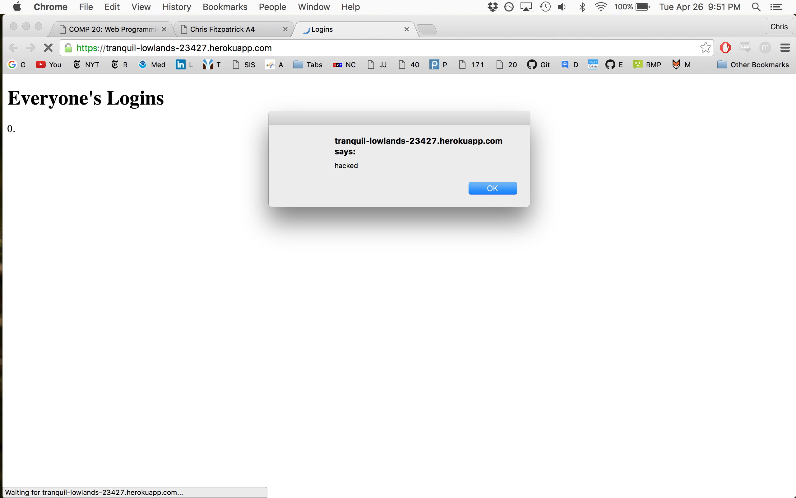
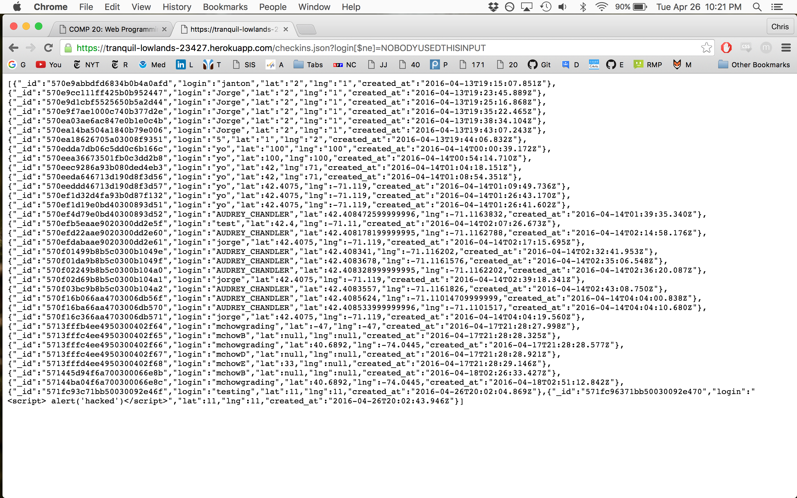

Introduction
I will be investigating the security and privacy of a web server. The purpose of the application is to store and return information about the of interest can take in a location (lat and lng coordinates) and a user name (via a post requwest) and store that information in a database. It then returns the information of all the users in the database as well as information about historical landmarks near the coordinates specified. The app also renders html of all of the users that have checked in as well as a JSON of checkins by a specific username.
The app can be found here.
Methodology: The first thing that I did in investigating the security of this document was read the source code and noticed no security checks.
Second, I used curl to input data and my browser to see the results (or any other dangerous results I could generate from the broswer).
Abstract of Findings -
I found major security risks, database privacy concerns and functional shortcomings.
Issue: Cross site scripting (XSS)
Location: The post request https://tranquil-lowlands-23427.herokuapp.com/sendLocation
Severity of issue: HIGH
I suspected this would be an issue given that this page trusts user input without an sanitization.
I then ran
curl --data "login=<script> alert('hacked')<script>&lat=11&lng=11" https://tranquil-lowlands-23427.herokuapp.com/sendLocation
This image shows the result: 
Resolution. This could be resolved by sanitizing the data with the following loop:
for (var i = 0; i < input.length; i++){
if (input[i] == '<' || input[i] == '>')
input[i] = ' ';
}
Issue: Database security
Location: The get request https://tranquil-lowlands-23427.herokuapp.com/checkins.json
Severity of issue: MEDIUM
I suspected this would be an issue given that this requests searched a db with a value collected from unsanitized user input. The reason that I find this issue to be medium and not major is that the information about user checkins can be found elsewhere. However, this is still a shortcoming of this program. Furthermore, sharing the information about where people are on the internet is a privacy concern in the first place.
I then inputted the following url to my browser:
https://tranquil-lowlands-23427.herokuapp.com/checkins.json?login[$ne]=NOBODYUSEDTHISINPUT
This image shows the result: 
Resolution: This could be resolved by sanitizing the data with the following loop:
for (var i = 0; i < input.length; i++){
if (input[i] == '<' || input[i] == '>' || input[i] == '[' input[i] == ']' input[i] == '=' input[i] == '$')
input[i] = ' ';
}
Issue: Flooding
Location: The post request https://tranquil-lowlands-23427.herokuapp.com/sendLocation
Severity of issue: MEDIUM
I suspected this would be an issue given that the server code does throttle the amount of inputs from a user. This is an issue becuase one user could clog the data with markers on the same spot, overflow the server with data (our mongoDBs can only hold the 256 free MB), and slow down the server. I ran the follwoing bash script:
#!/bin/bash
while :
do
curl --data "login=flooding&lat=11&lng=11" https://tranquil-lowlands-23427.herokuapp.com/sendLocation
done
Conclusion:
Overall, there are several security concerns that must be addressed. The costs of fixing the current vulnerabities only be a couple hours of a professional programmers time. There are other user experience issues that could be rectified, including the fact that currently the server does not check to make sure that the lat and lng coordinates going into the database are valid coordinates on the globe. This will not break the server, but it is an example of an extra step that can be taken to make this system runs smoothly.